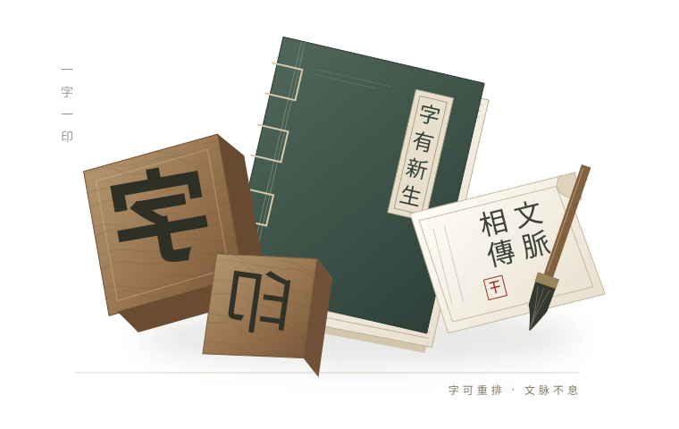

一字，见匠心。
反写、雕刻、捡取，每一枚小小字块，都凝聚着耐心与手艺。

从捡字到揭纸，让古老的智慧在指尖发生。
先选一句喜欢的文字，再开始你的第一次排印。
本体验参考浙江瑞安木活字印刷技艺。当地技艺与修谱实践紧密相连，字模、排版与刷印承载着持续使用的造物经验。
本作品简化了制字、研墨、润版和装订等环节。上墨与纸背刷印使用不同工具；字形、版式和纪念印张为当代再设计。
三条示例印句为项目设计用语，非古籍引文。当前工作台以几何方块模拟木字模。
中国非物质文化遗产网 · 工艺流程 ↗中国非物质文化遗产网 · 项目概况 ↗UNESCO · 中国木活字印刷术（英文） ↗取法传统
表达当下
反写、雕刻、捡取，每一枚小小字块，都凝聚着耐心与手艺。
散字成篇，用后归位。可拆、可组、可再用，是活字灵活的造物思路。
纸墨留下字迹。今天，以数字体验亲近工艺，让更多人看见它的价值。